Logo placement on bubble tea cups is an important aspect of branding and marketing for bubble tea shops.
The placement of a logo on the cup is one of the key component in creating brand recognition and making a lasting impression on customers.
The design elements to consider can include visibility, size, color, and design consistency.
To talk about logos, we have to see them.
Let's examine some of the bubble teas that I've had over the years!
Considering the design elements of Bubble Tea, it includes:

- height & diameter
- volume
- cup material
- sealing material
- logo placement
- straw color and material
- taste
- price
• logo placement
Teazzi Tea Shop
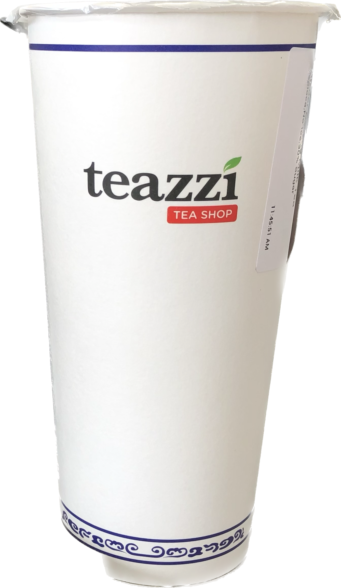
paper cup, side 1
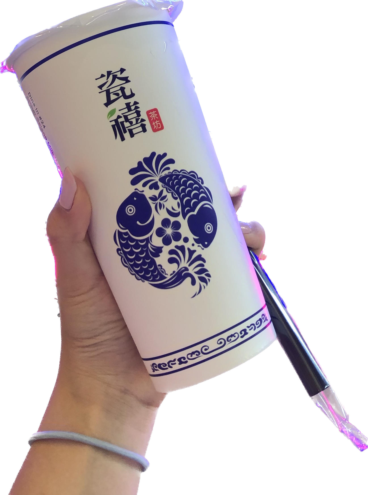
paper cup, side 2
plastic cup
Yifang

medium sized teazzi's paper cup and yifang's plastic cup
Fifty Lan

large sized plastic cup
medium sized plastic cup
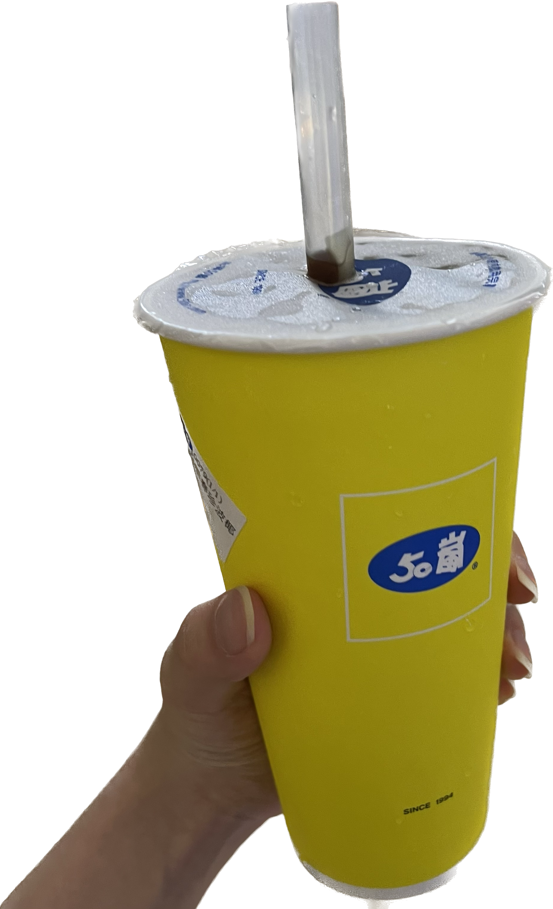
fifty lan Taiwan's large sized paper cup
JOOY Tea
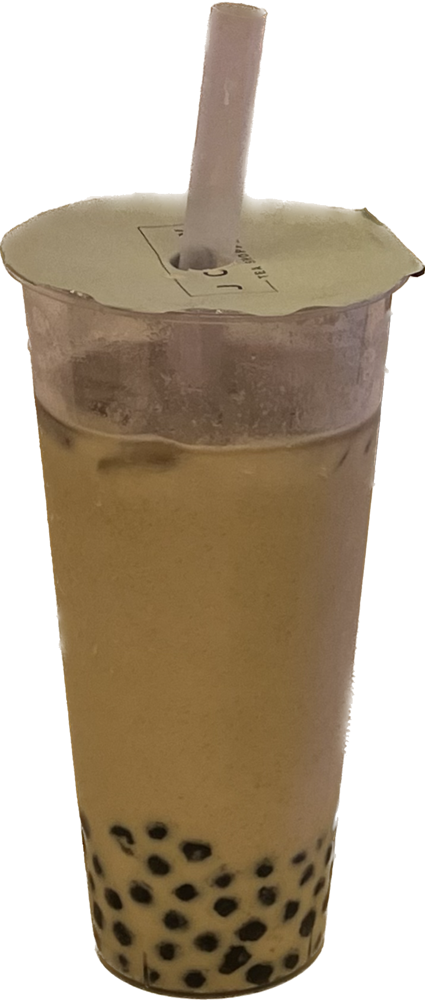
plastic cup
plastic cup with logo, side 1
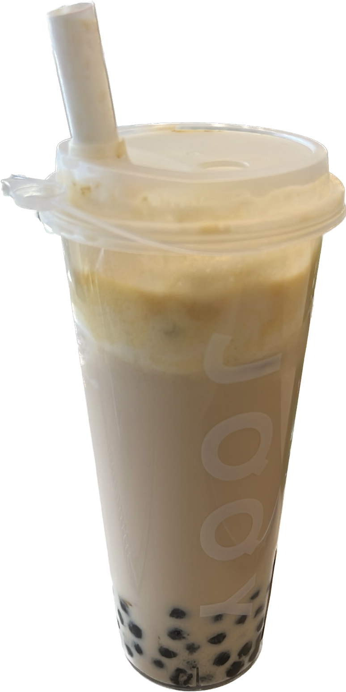
plastic cup with logo, side 2
Machi Machi
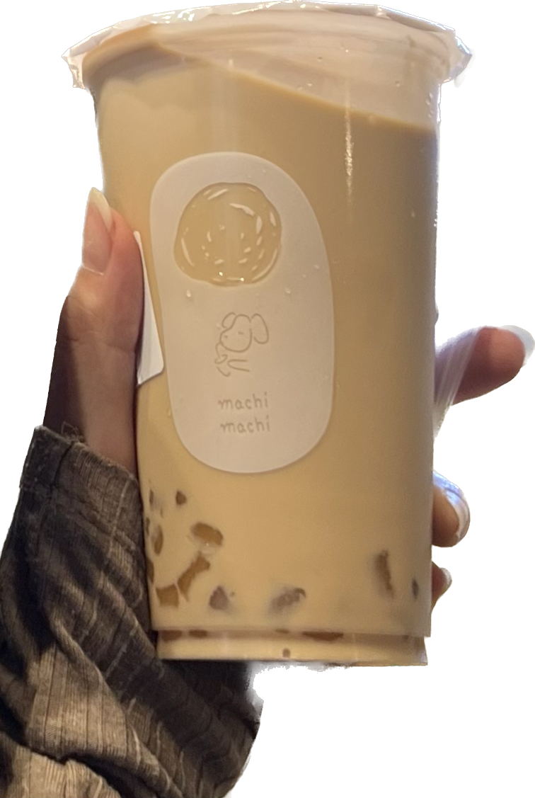
medium sized cup
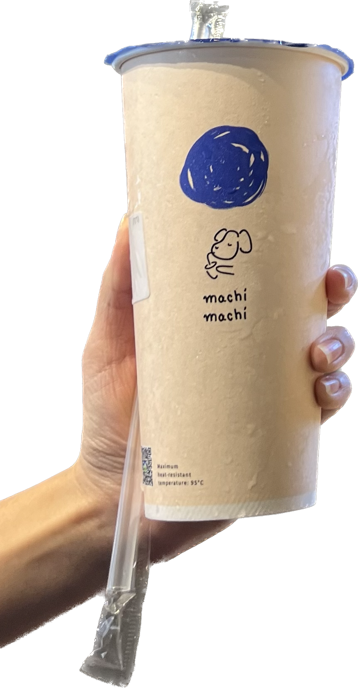
large sized cup
Moge Tea
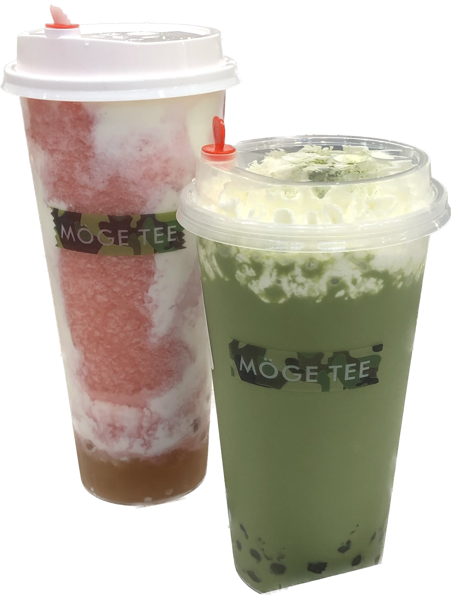
plastic cup, side 1

plastic cup in three sizes, side 2
Moo Moo Cha
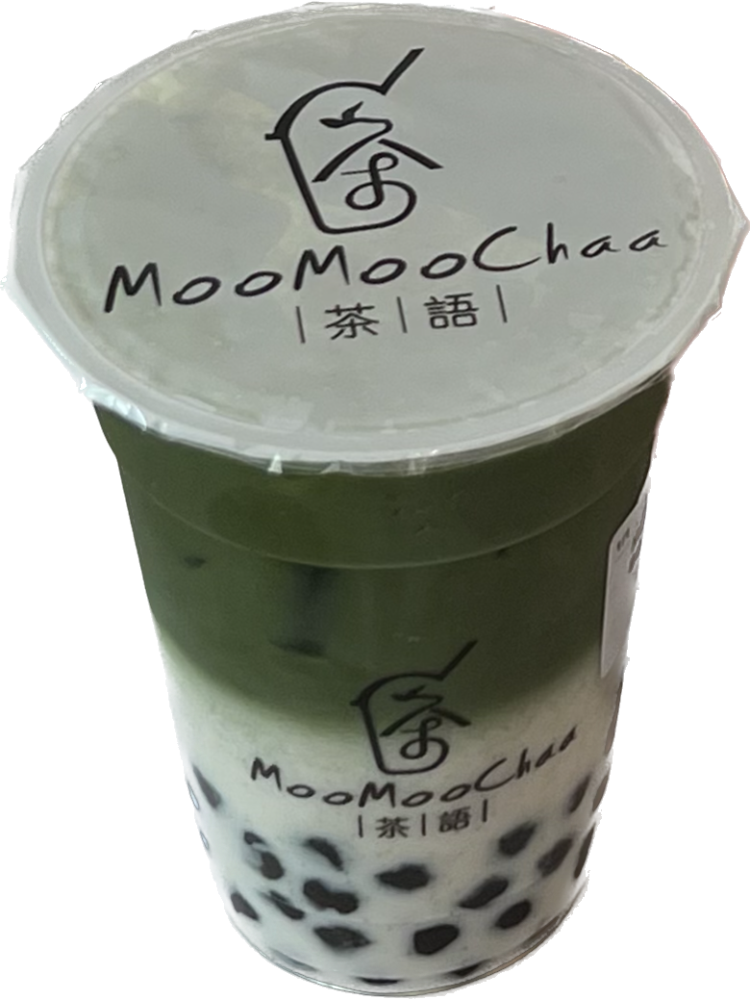
medium sized plastic cup
Tea de Soho
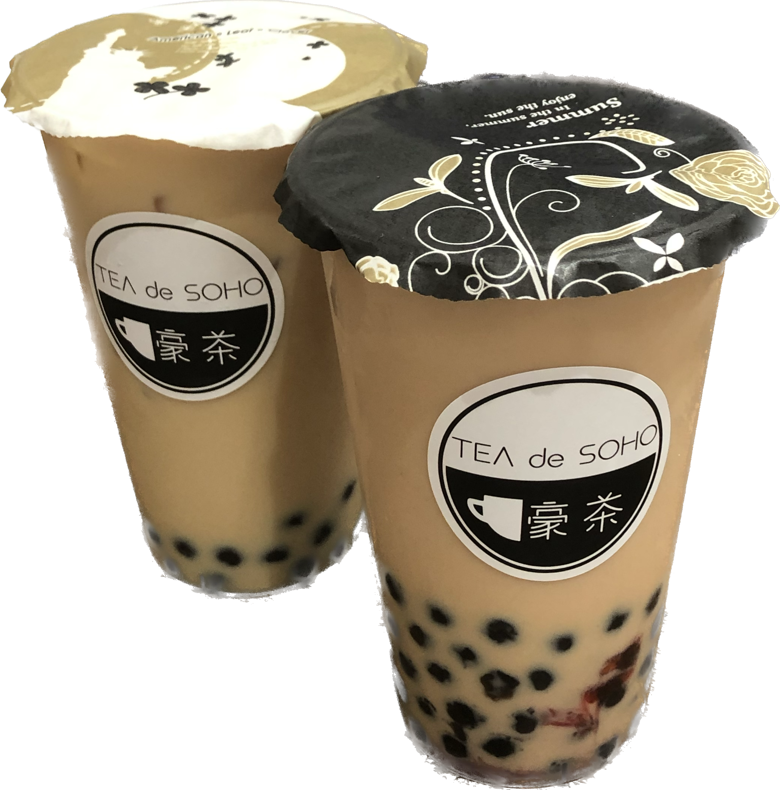
plastic cup with sealings variation
Gongcha
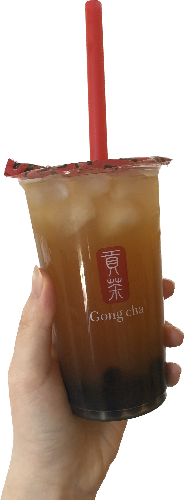
medium sized plastic cup
Chun Yang

large sized plastic cup
As you can see there are variations of logo placement differenate by the design choices of visibility, size, color, and design consistency.
Whether it was placed on the cup, the sealing, or both.
Where the logo is placed on the cup.
Also, the colors, and whether there are other imageries included.
Which brand did you think executed most successfully?
In the next entry, we will talk about the